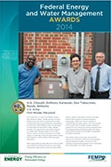
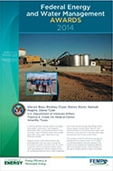

Read the success stories behind the 2014 Federal Energy and Water Management Award winners. You can print out and display posters to inspire energy efficiency in your agency.
The Federal Energy and Water Management Awards recognize individuals, groups, and agencies for their outstanding contributions in the areas of energy efficiency, water conservation, and the use of advanced and renewable energy technologies at federal facilities.
Director's Award
Sharon Conger
Kinga Porst
Heidi Sawyer
U.S. General Services Administration
National Deep Energy Retrofit Program
In 2012, the General Services Administration (GSA) issued a notice of opportunity to the 16 energy service companies (ESCOs) associated with the U.S. Department of Energy’s energy savings performance contracting (ESPC) indefinite-delivery indefinite-quantity contract, including potential projects at 30 GSA-owned buildings covering 16.9 million square feet in 29 states and the U.S. Virgin Islands. GSA ultimately awarded 10 ESPC task orders with a total value of $172 million distributed among seven ESCOs. The team sent a strong message that a higher level of energy savings was desired, leading to the incorporation of some typically underused, but lucrative, energy efficiency measures. The program also established a central Project Management Office to standardize the ESPC review and award process, allowing for a more consistent and higher level of expertise across the program. The team was able to significantly reduce project cycle time, awarding the 10 task orders in an average of 15.9 months, compared to 20.9 months for typical projects. The projects also achieved an average energy savings of more than 38%, which is about double the average achieved by other recently awarded ESPC projects at 19% savings.
Exceptional Service
| Download the poster. |
Greg Leifer
U.S. Department of Health and Human Services
National Institutes of Health
Bethesda, Maryland
Greg Leifer is the federal energy program manager for the National Institutes of Health, the largest operating division of the U.S. Department of Health and Human Services. Mr. Leifer was hired in 2001 as an energy engineer to coordinate energy efficiency efforts. He focused on complying with federal energy mandates at the Bethesda, Maryland, Campus. Due to his dedication and significant accomplishments, Mr. Leifer now leads all National Institutes of Health energy and water efficiency programs, activities, data collection, monitoring, and reporting. During his tenure, he has maximized the use of alternative financing contracts to conduct audits and implement projects. Over the past 13 years, Mr. Leifer implemented contracts totaling $88.6 million—$35.2 million in 2013 alone—with an estimated annual energy savings of 590 billion Btu, or 10.5% of FY 2013 annual energy consumption. His use of alternative financing to implement medium- and large-scale projects has become institutionalized as standard operating procedure for the organization’s energy project financing. Mr. Leifer’s leadership, commitment, and efficient use of the resources, financing alternatives, and technologies demonstrate his exceptional and sustained accomplishments at the National Institutes of Health.
| Download the poster. |
Linda Collins
U.S. General Services Administration
Public Buildings Service
Washington, D.C.
Linda Collins has worked at GSA for 41 years, with 32 years in the field of acquisition. Her dedication and commitment to achieving federal energy goals are evident in the “demand-side” energy management initiatives and “supply-side” energy procurement best practices she has helped agencies implement over her career. She has also worked tirelessly to build and reinforce partnerships between the federal government and regulated public utility companies. Ms. Collins currently serves as the director of GSA’s Natural Gas Acquisition Program, which delivers a reliable, competitive, and highly cost-effective approach to procuring natural gas. The program has generated $151 million in savings for federal facilities across the country from natural gas supply contracts awarded since October 2009. Ms. Collins also pioneered the use of reverse auctions more than a decade ago for competitive energy procurements, and has continued to refine the process so that contract awards are now made within hours of when pricing is received. GSA’s Energy Division has since used reverse auctions to purchase more than 5.4 trillion Btu of renewable power at no- or low-cost premiums compared to conventional power prices.
| Download the poster. |
David Zimmerman
Tennessee Valley Authority
Energy Right Solutions
Chattanooga, Tennessee
David Zimmerman has served the Tennessee Valley Authority for more than 28 years, and has led the agency in implementing sustainable design, green procurement, and energy efficiency and management efforts. Mr. Zimmerman is a key player in the Tennessee Valley Authority’s internal efforts to reduce energy and water use and in helping its business units incorporate sustainable technologies into business planning and operations. The Internal Energy Management Program was launched in the 1970s. Mr. Zimmerman was instrumental in expanding the program’s efforts to include sustainable building design and life cycle cost analyses, which have allowed the agency to recognize substantial savings and reduce in-house operation costs. Over the past six years, the Tennessee Valley Authority has realized a cumulative utility cost reduction of $13.7 million by implementating energy and water conservation projects. As of FY 2013, the agency achieved a 24.4% reduction in energy intensity compared to FY 2003, a 21.7% reduction in potable water intensity compared to FY 2007, and a 13.9% reduction in target subject greenhouse gas emissions compared to FY 2008.
Program
| Download the poster. |
Steve Perry
U.S. Air Force
Royal Air Force, Mildenhall, UK
Steve Perry’s efforts at Royal Air Force Mildenhall to develop the Air Force’s first installation-based “holistic energy plan” resulted in combined facility energy, aviation, and vehicle energy cost savings of $1.8 million in FY 2013. Mr. Perry incorporated a holistic strategy into the installation’s FY 2013 to 2014 Energy Action Month plans, which delivered more than 50 cross-functional activities in FY 2013. More than 20,000 personnel and family members helped to save $500,000 through their participation. Further, the program empowered high energy consumers and the more than 400 onsite facility managers to take ownership of future utility reductions. Facility managers were provided tools to benchmark usage, trained to find low-cost improvements, and incentivized with a new quarterly award program. Through progressive teamwork, and by tearing down cultural barriers, Mr. Perry moved the traditional civil engineering-centric approach to a wider audience, providing greater visibility to all energy and water commodities for aircraft, vehicles, and facilities. His initiative was praised by the Deputy Assistant Secretary of the Air Force (Energy), and is now the benchmark for the U.S. Air Forces Europe Major Command.
| Download the poster. |
Jim Jacobsen
Monte McVay
Randall Pieper
Tim Pugh
Fox Theriault
U.S. Air Force Space Command Energy Program
Peterson Air Force Base, Colorado
The Air Force Space Command Energy Program team developed a focused energy strategy that saved 1.48 billion Btu in FY 2013. The program’s energy roadmap focuses the entire command on a number of education and outreach “pulse points” for its 85 bases, geographically separated units, and other locations worldwide. The plan includes the following initiatives: implementing an energy strategic communication plan, reducing energy use at the top two energy-intensive geographically separated units, deploying high-efficiency exterior lighting command-wide, examining energy-intensive mission activities, reducing fleet fuel consumption, developing and deploying energy management systems at each installation, emphasizing energy management in facility design, and making the program headquarters building a model for energy management. As of FY 2013, the comprehensive energy and water conservation efforts driven by the Air Force Space Command Energy team, coupled with the efforts of each installation in the Command, led to a 29% reduction in facility energy intensity and a 46% reduction in water intensity from their respective baseline years.
| Download the poster. |
Chip Bulger
Jeffrey Havlicek
J. Mark Lyons
Alan Sims
Michael Smith
U.S. Air Force
Energy Analysis Task Force
Office of the Secretary of the Air Force
Installations, Environment, and Logistics
Washington, D.C.
The Energy Analysis Task Force program incorporated operational aviation efficiencies in FY 2013 that led to annual savings of 17.8 million gallons of jet fuel and $56 million. The initiatives leveraged the civilian expertise of its Air Force Reserve members to incorporate industry best practices into policy and procedural changes that improve resiliency, reduce energy demand, ensure supply, and foster an energy-aware culture. Strategies executed during FY 2013 include adopting fuel-efficient descent approaches, adjusting outdated landing weight restrictions, improving cargo-loading techniques to optimize aircraft capacity, and reducing auxiliary power unit usage by prioritizing ground power sources when available. The task force also fostered a change in the Air Force energy culture by evaluating undergraduate pilot training techniques and identifying new faster and lower energy flight profiles, which results in enhancement of the training syllabus objectives to produce more energy-aware graduates. With the return on investment for program accomplishments exceeding $10 million in annual savings per full-time equivalent employee, the Energy Analysis Task Force is leading the way in Air Force energy conservation.
| Download the poster. |
Captain Christopher Chope
Tonnie Harrison
David Hayden
Forrest Honderich
Andrew Porter
U.S. Navy
Naval Air Station Oceana Energy Program
Virginia Beach, Virginia
During FY 2013, Naval Air Station Oceana energy program initiatives saved 18 billion Btu and 39 million gallons of water compared to FY 2012. Naval Air Station Oceana’s energy program sought to incorporate strategies that would limit financial stress on an already tight budget. It focused on measuring energy awareness, implementing new technologies to improve systems, increasing equipment performance, and identifying sustainable building infrastructure solutions. The team implemented a variety of projects, including retrocommissioning, installation of ground-source heat pumps, and lighting upgrades. Naval Air Station Oceana also created the concept of distributed energy teams as a key component of its awareness program to encourage a natural, friendly, competitive environment that will instill energy conscious behaviors. The teams will infuse interesting, informative, and diversified activities into the program to maintain command involvement and interest, and will continue to be self-administering and self-sustaining. These and other program efforts have enabled Naval Air Station Oceana to reduce its energy intensity by 52% and water intensity by 24% in FY 2013 over their respective baselines.
| Download the poster. |
U.S. Navy
Naval District Washington
Naval Facilities Engineering Command Washington
Washington, D.C.
In 2013 the Naval District Washington built the foundation for a comprehensive energy program that reduced energy intensity by nearly 19% and water intensity by 13% from the respective baselines across the region’s six installations. The program focuses on five energy pillars: energy culture, energy information, energy efficiency, renewable energy/alternative fuels, and energy security. Initiatives implemented in FY 2013 included establishing five teams to enhance energy leadership across the region. The teams focus on optimizing retrocommissioning projects; identifying potential renewable energy opportunities; collecting and analyzing data about fuel consumption; installing advanced metering and deploying smart grids that enable technologies to monitor, control, and respond to building and utility management systems; and coordinating system monitoring, administration, and dispatch of staff. The program created 50 megawatts of renewable energy opportunity and brought the total of advanced metering infrastructure to 99% installed with 37% actively connected. The Naval District Washington’s comprehensive program forms the basis of its energy policy and fundamentally empowers all employees to consistently and efficiently use energy resources.
 |
| Download the poster. |
U.S. Department of Energy
Nevada National Security Site
National Nuclear Security Administration, Nevada Field Office
Alternative Fuel Vehicle Management Program
North Las Vegas, Nevada
In FY 2013, the Nevada National Security Site’s fuel Lockout Program increased the use of renewable fuel by 35.3% and decreased the use of petroleum-based fuels by 18.6% compared to FY 2012. Program results were improved in FY 2013 because a second E85 infrastructure was installed to increase the availability of renewable fuels (E85 and B20) at both the site’s fueling locations. The E85 Lockout Program is a modification to the fuel management system that involved reprogramming the system to identify and prevent alternative fuel vehicles from using nonrenewable fuel from the site’s fueling stations. The reprogramming was accomplished by the Fleet, Fuel, and Equipment Service Renewable Fuel Program Team did this reprogramming because the system manufacturer was unable to assist. The E85 Lockout Program was instituted at the Nevada National Security Site in FY 2009 at the first service station, and then again in FY 2013 at the second service station. The program at both service stations has increased consumption of renewable fuel by approximately 195% compared to the FY 2005 baseline.
| Download the poster. |
James Allard
Nicholas Garmon
Darion Mayhorn
Matt P. Warren
U.S. Department of the Interior
Visualizing Water Savings at Mountain Park Project
Bureau of Reclamation, Oklahoma-Texas Area Office
Oklahoma City, Oklahoma
In FY 2013, efforts of the Bureau of Reclamation’s Oklahoma–Texas Area Office to conserve water in the region resulted in savings of 1.14 billion gallons—a 37% reduction from FY 2012. In 2009, the office designed and created a drought forecast model to verify and update Tom Steed Reservoir yields. Each month, the model simulates the lake volume and elevation based on historical inflow and predicted losses and releases from the reservoir. In light of growing concerns about reservoir depletion during ongoing extreme drought conditions, in FY 2013 Oklahoma–Texas Area Office managers identified the opportunity to provide drought assistance to their operating partner, the Mountain Park Master Conservancy District. The model increased understanding and awareness of the impacts of the ongoing drought, and led to the implementation of significant—and often mandatory—water conservation measures throughout the region. Along with the tremendous water savings, ancillary benefits included cost energy savings of about $40,000 from reduced pumping requirements, about $10,000 in operations and maintenance savings and avoided water treatment costs, and improved recreation and fish and wildlife conditions from higher reservoir levels.
| Download the poster. |
Jeff Hernbloom
U.S. Department of Transportation
Federal Aviation Administration
Kansas City Air Route Traffic Control Center
Olathe, Kansas
In FY 2013, Jeff Hernbloom partnered with the local utility to implement and manage a new initiative, the Cooling Tower Evaporation Credit Program, which resulted in more than $18,500 in savings in one year for the Kansas City Air Route Traffic Control Center. After investigating and discovering his facility was drastically overpaying for water treatment, Mr. Hernbloom convinced management to invest $1,500 for a one-time purchase of metering equipment to measure the precise amount of water being expelled from the cooling towers into the sewer discharge system. Previously, sewage charges were based on only the measured input water to the cooling towers. After subtracting the thousands of gallons of water—70% or more of the supply—that evaporate monthly as part of the cooling process, utility charges are now drastically reduced and more accurate data are provided to personnel to better monitor and tune the operating efficiency of the equipment. Additional benefits are realized from optimizing energy and chemical loads. Mr. Hernbloom has already started consulting with other facilities to implement the program throughout the Federal Aviation Administration; savings of nearly $400,000 in water utility costs are expected annually across 25 Air Traffic Control Centers.
| Download the poster. |
Karen Curran
Mark Ewing
Lee Ann Walker
Steve Hochman
Brian Wright
U.S. General Services Administration
Public Buildings Service, Office of Facilities Management and Services Programs, Energy Division
Washington, D.C.
As landlord for the civilian federal government, GSA’s Public Buildings Service initiates programs with the potential to generate considerable energy savings. These include three related initiatives—advanced metering, Rapid Building Energy Assessments, and the Energy Usage and Analysis System—that resulted in energy intensity reductions of 9.3% and savings of $27.3 million in FY 2013 compared to FY 2011. The program’s advanced metering initiative has far exceeded legislated requirements; the number of buildings currently metered or slated for meter installation account for about 91% of energy consumed by all GSA facilities. Rapid Building Energy Assessments is a virtual modeling approach that facilitates large-scale building energy performance analysis, reducing the need for costly onsite audits. After a successful pilot on 25 buildings, the program is now moving forward with 200 more. Finally, the program upgraded its Energy Usage and Analysis System, responsible for tracking utility use and cost data in all GSA-managed buildings nationwide, for easier viewing of the latest data by building, service center, or region. The combined use of these tools provides a focused effort to collect, analyze, and manage the right data, and has improved energy decision making across GSA’s building portfolio.
Project
| Download the poster. |
Jeffrey DeVore
Stephen Grimes
Gerry Mitchell
Alfonso Sanchez
U.S. Air Force
Conversion for Advanced Power and Thermal Research Lab, Building 23
Wright-Patterson Air Force Base, Ohio
In FY 2013, a team of architects and engineers from Wright-Patterson’s 88 Air Base Wing Civil Engineering Division successfully salvaged and renovated an underused, historic 53,000 ft2 hangar built in 1934, increasing usable laboratory space by 60%, while reducing water use by 45% and energy use by about 30%. The new energy-efficient building allowed the Air Force Research Laboratory’s Power Control Division, formerly located in multiple locations, to consolidate. An improved thermal envelope with spray foam insulation, stringent HVAC requirements, high-efficiency glazing, reduced exterior lighting, and occupancy sensors is projected to reduce energy use by 9.8 billion Btu and energy costs by more than $141,000 per year. Water savings are estimated at 62,000 gallons per year. The building design surpassed the required Leadership in Energy & Environmental Design Silver criteria to achieve Wright-Patterson’s first Gold Certification. Further, this project allowed for the demolition of building 450, reducing Wright-Patterson’s footprint by 148,300 ft2 and saving an additional 8.7 billion Btu annually.
Richard Hiatt
Griffith Turpin
U.S. Air Force
Joint Base Elmendorf Richardson Energy Team
Landfill Gas Waste-to-Energy Initiative
Joint Base Elmendorf, Richardson, Alaska
In FY 2013, Joint Base Elmendorf Richardson’s newly constructed landfill gas waste-to-energy plant generated 44,000 megawatt-hours of renewable energy, saving the Air Force almost $1.8 million in energy costs. For many years the Anchorage Municipal Solid Waste Landfill, located adjacent to Joint Base Elmendorf Richardson in Anchorage, Alaska, collected and burned landfill gas. To increase the installation’s renewable energy use and improve energy security, the team partnered with the Municipality of Anchorage and Doyon Utilities to convert the landfill gas into usable energy for the base. This is first landfill gas-to-energy facility constructed in Alaska, and includes an electric power generation plant, a landfill gas processing module and pipeline, an electric tie to the base’s D-Street substation, and a natural gas pipeline. The partner utility operates and maintains the plant through a utility energy services contract with the base. The anticipated life cycle renewable energy production is approximately 3 million megawatt-hours over 46 years, for $70 million in savings. Facility operation reduced greenhouse gas emissions by 7,800 tons in FY 2013. With additional generators due to come online in 2016, the facility will avoid nearly 14,000 tons of greenhouse gases per year.
| Download the poster. |
William Blake
Keith Boone
Stefan Bieniawski
David Dupnick
Donald Erbschloe
U.S. Air Force
Air Mobility Command/Air Force Materiel Command
Surfing Aircraft Vortices for Energy
Scott Air Force Base, Illinois/Wright-Patterson Air Force Base, Ohio
In July 2013, two C-17 aircraft successfully demonstrated the Surfing Aircraft Vortices for Energy ($AVE) concept on an operational mission, achieving a direct savings of $7,500 in fuel costs. The $AVE concept uses formation flight principles derived from flocks of migrating birds, with trail aircraft harvesting energy from the upward velocity (or upwash) of the formation leader. In 2007, the Defense Advanced Research Projects Agency initiated a study with Boeing to investigate requirements for applying $AVE to the C-17, the largest aviation fuel consumer in the U.S. military. Boeing predicted optimal formation positions and developed software, enabling $AVE operations with C-17 hardware. After the software was installed, the successful demonstration enabled the trial aircraft to reduce fuel use by 10,800 pounds. Air Mobility Command then commissioned $AVE as an advanced technology demonstration; Air Force Research Laboratory identified potential $AVE candidate missions and found that more than $10 million could be saved each year in the C-17 fleet with minor alterations to mission parameters. By applying the $AVE concept fleet-wide across the Air Force, possible fuel savings are estimated at more than $50 million annually.
| Download the poster. |
U.S. Air Force
1st Special Operations Civil Engineer Squadron
Graywater Tank and Distribution System
Hurlburt Field, Florida
In FY 2013, Hurlburt Field Air Force Base modified its water reuse system to improve capacity, which saved 13 million gallons of water in only four months—a 9% reduction from FY 2012. The $4.9 million project added more than 40,000 linear feet of piping and a 500,000-gallon storage tank to the distribution system, increasing the amount of water available for reuse. Previously the system reuse capacity was limited to 10,000 gallons per day; 98% of the wastewater treatment plant effluent was discharged to permitted wetlands after being treated and dechlorinated. The new system maximizes reuse of wastewater treatment effluent, decreases the stress on local drinking water supplies, promotes the recharge of the groundwater within the local aquifers, and reduces the possibility of saltwater intrusion in the area. Hurlburt now uses the treated reuse water for irrigation, aircraft and vehicle washracks, fire training, and cooling towers. The base can also provide up to 200,000 gallons per day of excess water to the local community for reuse. Overall, the program has reduced Hurlburt Field’s water intensity by almost 20% from the 2007 baseline.
| Download the poster. |
U.S. Air Force
Davis-Monthan Air Force Base Energy Program
Davis-Monthan Air Force Base, Arizona
Davis-Monthan Air Force Base’s Energy Team worked with local utilities, military construction design teams, other Air Force agencies, and the U.S. Department of Energy to implement projects and programs that saved 11.6 billion Btu and $235,000 in FY 2013 from Fy 2012. Central plant base cooling projects included installing energy-efficient chillers in a new central plant with a chilled water distribution loop and a plate and frame heat exchanger to cool new and older facilities. The team also completed a four-phase project that upgraded all large facility boilers base-wide. A second base-wide project changed out 675 high-pressure sodium lighting fixtures to T-5HO fluorescent lights. The installation of 580 light-emitting diode taxiway lights will result in a one-year payback and significant maintenance savings. Retrocommissioning was completed on more than 200,000 ft2 during FY 2013, including two high security facilities. All newly constructed buildings on the base are designed to Leadership & Energy and Environmental Design Silver standards or better. The team works with the local utility to receive the maximum return of rebate surcharges, with more than $50,000 received to date and a forecasted total of more than $160,000 through 2015.
|  |
| Download the poster. |
H.G. Chissell
Anthony Karwoski
Dan Tobocman
Randy Williams
U.S. Army
Fort Meade Synchronous Reserve Program with American Water, Viridity Energy and Sain Engineering Associates, Inc.
Fort Meade, Maryland
In FY 2013 the U.S. Army Fort Meade worked with American Water, Viridity Energy, and Sain Engineering Associates to implement a project to respond to electricity grid frequency fluctuations for the fort’s water filtration plant, saving about 2.3 billion Btu and $75,000 in utility rebates annually. This was the first successful program at a large water filtration plant to use a new Source Control and Data Acquisition (SCADA) system to optimally cycle the pump motors during grid frequency events without affecting water operations. Meter pulse data kits and cable runs to the SCADA were installed, allowing the team to check high horsepower water pump motors and associated electricity meters in the field to retrieve real-time interval data needed for demand response participation. When the system operator is contacted by the utility, some or all of the pumps can be cycled off as needed. System operators prepare for such events by choosing optimal times for pumping during off-peak periods; large water tanks are pumped full overnight in preparation for daytime demand. This project improves security, reduces the chances of a brownout, and reduces peak load and demand charges. The team is now working to expand the program to the wastewater side of operations for further savings.
| Download the poster. |
U.S. Navy
Naval Air Weapons Station China Lake
Navy's Largest Power Purchase Agreement Solar Plant
China Lake, California
In FY 2013, Naval Air Station Weapons Station China Lake completed construction of a 13.78-megawatt solar photovoltaic (PV) system—the largest solar plant in the Navy and the first installed on a U.S. Department of Defense installation—using a 20-year solar power purchase agreement. The new PV plant produces 30,000 megawatt-hours annually, providing 30% of Naval Air Weapons Station China Lake's annual energy. Under the power purchase agreement, the site will purchase $80 to 100 million worth of energy at the negotiated price during the next 20 years, avoiding about $13 million in energy costs over the contract period. To make this project possible, extraordinary effort went into market research, technical analysis, industry partnership, preparation of complicated acquisition documentation, and navigation of complicated regulations and incentives. During 18 months of discussions, the team successfully negotiated the terms and conditions that satisfied government and private financing requirements. Use of the power purchase agreement as a financing model has been growing within the Navy, and with the knowledge gained from this project, the agency plans to further streamline the approval process to pave the way for new agreements.
| Download the poster. |
CDR John Anderson
Daniel Grimsbo
Daniel Lougen
Timothy Stufft
Cory Wright
U.S. Navy
Camp Lemonnier Energy Generation Reconfiguration Savings
Camp Lemonnier, Djibouti
In FY 2013, the energy team at Camp Lemonnier, Djibouti implemented an air conditioning improvement project that saves 61 billion Btu and $2 million annually. The camp is located in one of the hottest inhabited places in the world, with temperatures of 77° to 111º F year-round and humid, salty, dusty air. In this harsh environment, keeping equipment operating at maximum efficiency is difficult. The site generates all its own power from diesel generators, and the team recognized that generating power more efficiently would make a significant, immediate impact on energy efficiency. The team developed a project to reconfigure Lemonnier’s energy production by eliminating the least efficient generators, consolidating loads, connecting the two power plants to remove the need for excess reserves and improve capacity, and operating only the most efficient generators when loads permitted. Also, 900 air conditioning units were replaced with higher efficiency units. Together these projects reduced energy consumption by 9% from FY 2012, with a project payback of only 1.5 to 2 years.
| Download the poster. |
Pamela Dei
Melissa Kostich
Scott McIlhargey
Kristine Murray
Russell Strach
U.S. Department of the Interior
U.S. Geological Survey Great Lakes Science Center
Wet Laboratory Upgrade
Ann Arbor, Michigan
The U.S. Geological Survey’s Great Lakes Science Center completed a major wet lab upgrade in FY 2013 that will save $9,000 in annual storm water discharge costs and decrease water use by about 52.6 million gallons per year. The upgrade replaced a once-through well water system with a recirculating city water system, dramatically increasing capacity and efficiency and eliminating the constant flow of well water. Before the upgrade, the wet lab was becoming increasingly difficult to operate because of plugged water lines and failure of equipment already at or near the end of its useful life. The design team and scientists worked together on a cost-effective, holistic approach, developing a plan that combined several projects on the maintenance and construction backlog and replaced the entire process water system, including peripheral components. The recirculating system also reduces chiller operation, and the change to city water and use of polyvinyl chloride plastic piping dramatically improves water flow, which in turn reduces pumping energy. These improvements will save about 1.2 billion Btu of energy per year.
 |
| Download the poster. |
Debbie Beck
Tiffany Breske
Andrew McDermott
James Nissen
Craig Swedenborg
U.S. Department of the Interior
U.S. Fish and Wildlife Service
Upper Mississippi River National Wildlife and Fish Refuge Headquarters and Visitor Center
La Crosse District, Wisconsin
In FY 2013, the U.S. Fish and Wildlife Service completed a high-performance Leadership in Energy & Environmental Design Silver-rated, 11,759 ft2 Headquarters and Visitor Center at the Upper Mississippi River National Wildlife and Fish Refuge. A 74.86-ton ground-source heat pump, three solar hot water collectors, and a 35.88-kilowatt grid-tied solar PV array generate 313 million Btu of renewable energy that will save at least $4,700 annually. Energy efficiency strategies throughout the all-electric building include passive solar energy architecture, thermal mass, superinsulation, a cool roof, abundant daylighting, low-e glazed operable windows, energy-efficient fluorescent and light-emitting diode fixtures, and occupancy sensors and timers. Approximately 46% of the total building materials—gypsum board, acoustical ceiling tiles, carpet, ceramic tile, restroom partitions, and the steel roof—were manufactured using recycled materials. Low-flow water fixtures conserve almost 30,000 gallons of potable water annually, and a 3,000-gallon rainwater harvesting and containment system provides water for flushing toilets and urinals. Located in scenic Brice Prairie at the gateway to the refuge, the attractive facility teaches more than 30,000 visitors each year about the benefits of sustainability.
| Download the poster. |
U.S. General Services Administration
Public Buildings Service Region 6
Wichita U.S. Courthouse Energy Savings and Systems Retuning Project
Wichita, Kansas
GSA Region 6 achieved a 20% energy intensity reduction at the U.S. Courthouse in Wichita, Kansas in FY 2013 from FY 2012. Several high-impact energy-saving changes were completed at the 80-year-old facility through a 2010 American Recovery and Reinvestment Act project, including an advanced metering installation and upgrades to air handlers, boilers, chillers and building controls, but the GSA Region 6 team pressed for further energy savings. The team initiated a targeted Energy Efficiency Expert Evaluation, or E4, retuning project; implemented building staff-initiated energy management practices; and engaged contractors and tenants. The retuning project included a process through which specific no- and low-cost adjustments to building systems were identified and executed. Together the projects have an expected payback of two years, and saved more than $21,000 in energy costs compared to FY 2012. These achievements were possible because of partnerships with the Pacific Northwest National Laboratory, operations and maintenance and janitorial contractors, and the courthouse tenants, as well as the planning and persistence of the Wichita Courthouse building manager, the hard work of the operations and maintenance staff, and the dedication of the GSA Region 6 energy team.
| Download the poster. |
Daniel Ahlberg
Daniel Bartley
Mark Hurley
Robert Potter
Nils Strand
U.S. General Services Administration
Public Buildings Service Region 5
Hart-Dole-Inouye Federal Center Water Saving Projects
Battle Creek, Michigan
In FY 2013, GSA’s Hart-Dole-Inouye Federal Center saved about 10 million gallons of water—a greater than 50% reduction— by implementing $36,000 in conservation projects. First the team repurposed the building infrastructure to send rainwater through drains on two roofs to an abandoned 125,000-gallon cistern. Once treated and filtered, water from the cistern is used for cooling tower make-up water and manual irrigation. The team also installed a weather station that sends data to the building automation system that controls irrigation. Sophisticated programming logic was added to the building automation system based on the data provided from the weather station. This allowed the calculated evapotranspiration rate to determine whether to irrigate instead of using a simple time clock. Further, a survey of the irrigation lines resulted in the closure of several lines found to be unnecessary to serve the Federal Center’s current irrigation needs. The combined projects saved about $45,000 in costs in the first year of operation, resulting in a payback of less than one year.
|  |
| Download the poster. |
Steven Bass
Rodney Cryer
Danny Davis
Samuel Hagins
Glenn Tyler
Thomas E. Creek VA Medical Center
Integrating Solar Power with Thermal Storage
Amarillo, Texas
In 2013 the Amarillo Veterans Affairs (VA) Health Care System constructed a 2.28-megawatt PV covered parking project at the Thomas E. Creek VA Medical Center that provides about 30% of the center’s electricity to save $245,000 annually. This innovative PV system keeps vehicles cooler during summer and protects them from rain, snow, and hail. It is the first system the VA has used in conjunction with an ice thermal storage system, which was designed to shift the medical center’s air-conditioning load from day to night. Integrating the PV with thermal storage load shifting further reduces daytime energy needs. When PV and thermal storage function at their peak, some electricity is sent back to the grid, which pays for electricity that VA uses at other times. This synergy of solar PV and thermal storage has distinguished the medical center as VA’s leader in minimizing daytime electricity demand. It has helped set the standard for integrating various types of sustainable energy, and has already set the stage for similar systems at other VA facilities.